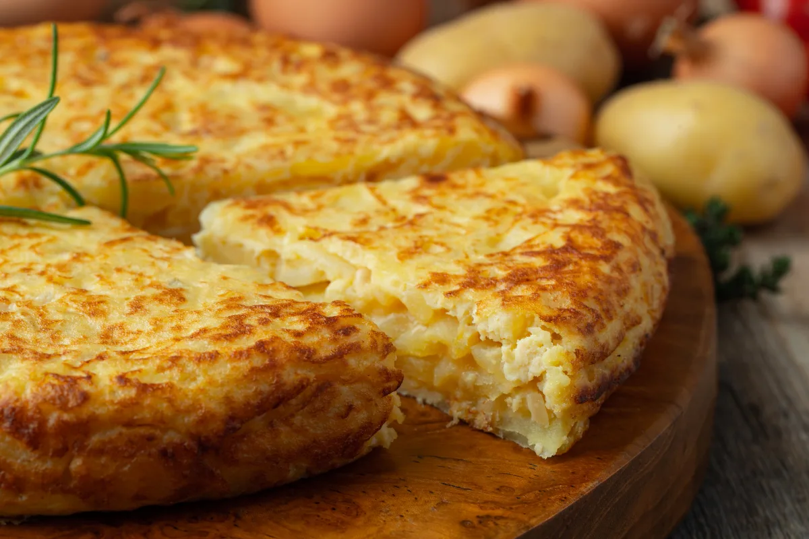

Lasagna recipe

Description
Tortilla is an easy to make recipe that will be perfect to share.
Follow the steps and you will have this wonderful spanish food in less than one hour!
Ingredients
- Eggs
- Potatoes
- Salt
- Olive oil
- Onion
Directions
- Cut the potatoes in small cubes.
- Fry the potatoes until cooked, then try to remove the most oil possible from them.
- If you like, cut the onion and stir-fry it. Otherwise skip this step.
- Let the potatos and onions cool.
- Whisk the eggs, and add the potatos and onions. Wait 15 minutes.
- Grease a round skillet and add the mixture, cook with low fire for 6-8 minutes.
- Detach the cooked egg from the skillet, and aided by a big plate, flip the tortilla quickly and put the uncooked side on the skillet.
- Let the tortilla cook for another 6-8 minutes, and then remove it from the fire.
- Serve on another plate and wait for 10-15 minutes before serving.
- Enjoy!!
Back to recipe list